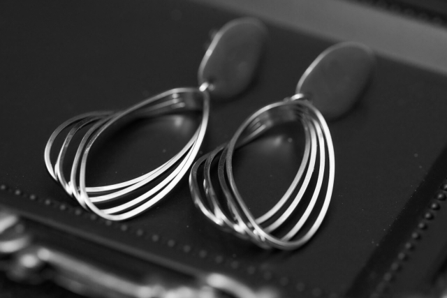
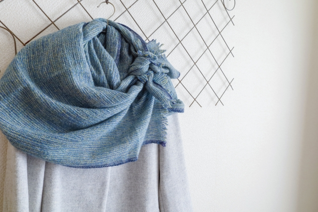
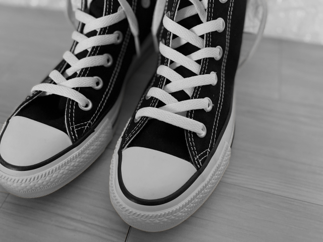
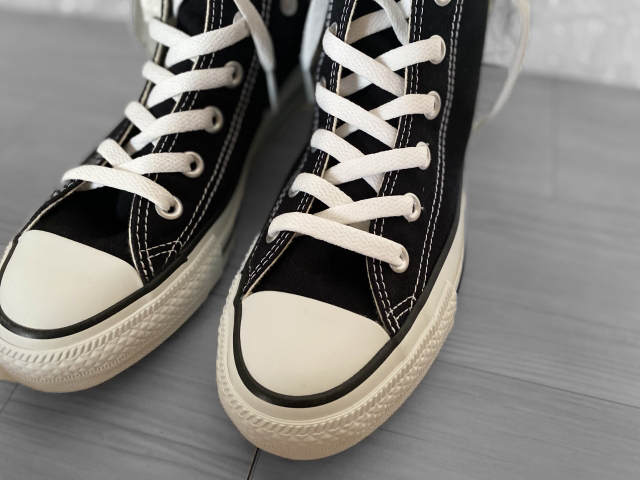
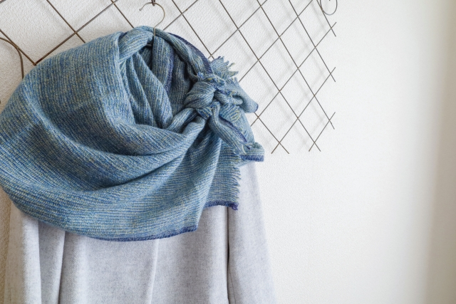
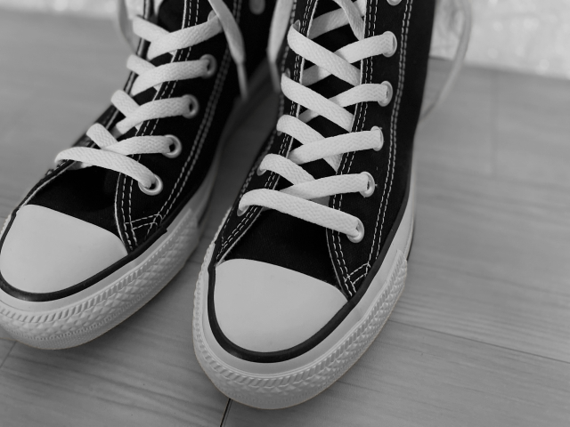
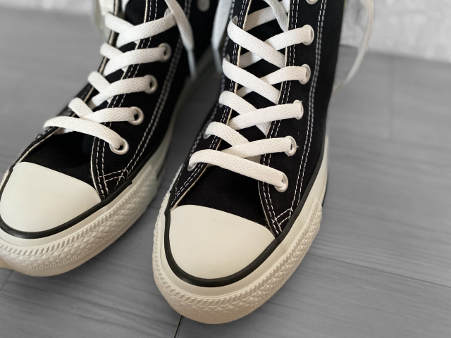
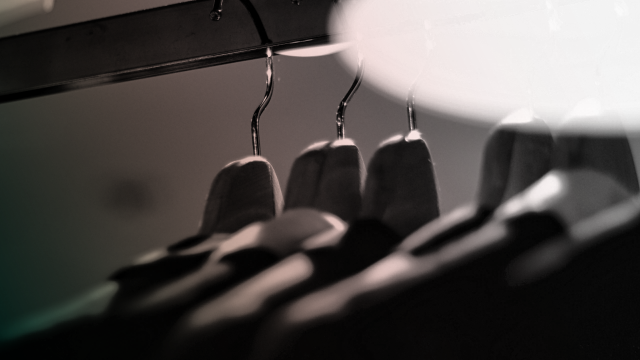

FASHION
OVERVIEW
ファンションブランド『瘋癲』は
自由かつ独創的なファンションを楽しみたい
そんな人におすすめしたいファッションブランドサイト
人と被らない服を着たい。自分だけのスタイルを確立したい。
そんなお客様のニーズにお応えできるブランド
それが『瘋癲』
0
 





子供達の未来のため
未来を生きる子どもたちのために、少しでも私たちにできることをしたい。そんな思いから、製造においてはサスティナブルな視点を取り入れました。エネルギー使用量と廃棄物を削減する、塗装レスのフレームもそのひとつです。またストラップにはリサイクルポリエステル、箱にはリサイクル紙を使用。これからの社会を見据え、できる限り環境負荷を減らしています。
人が物事に対して思い描くイメージは、思いのほか儚い。 僅かでも新たな視点を取り入れることで、それらは一変し得る。 新たな視点を獲得することーそれは精神世界における旅である。
2017年からアウトドアで培われた機能合理性を都市生活者へ提案し続ける、The North FaceのUrban Exploration。今期は「Perspectives ー 視点たち」をキーワードに、アパレルとバッグ＆シューズのそれぞれを、２つの異なる視点とシーンで切り取ったヴィジュアルで、コレクションを表現する。それは私たちが今まで積み重ねてきた歴史と機能、そしてデザインに、新たな視点を付与するための試みでもある。


FASHION BRAND